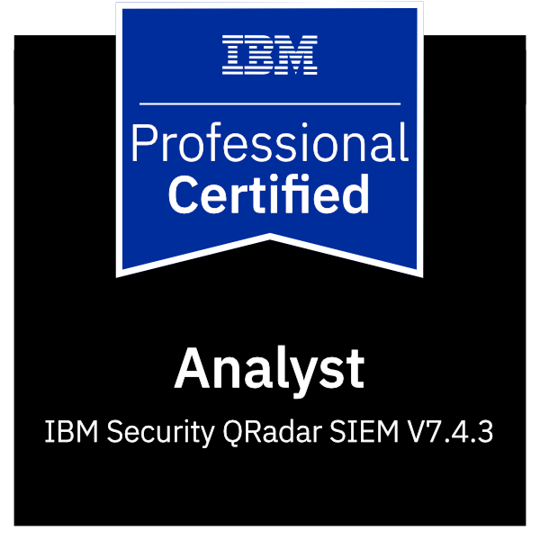
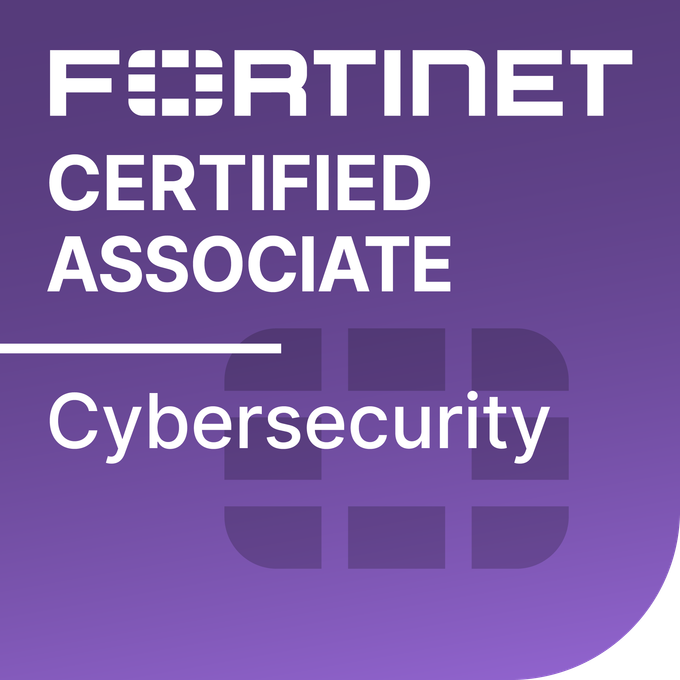
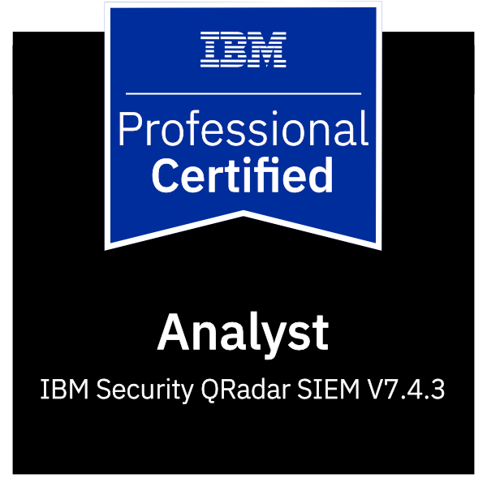
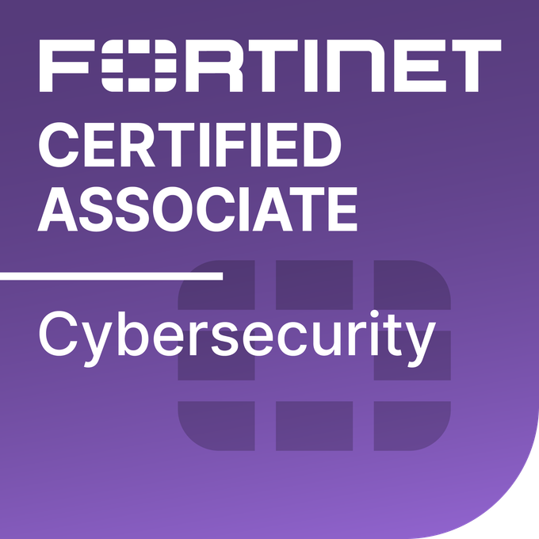

My name is Laszlo Geiger and I am a 25-year-old Computer Science Operational Engineer with 3 years of experience in Cyber Security. My specialization was Cyber Security at the University of Obuda, and I have relevant experience with SIEM systems (Splunk, QRadar, Sentinel) and security tools. I understand the principles of firewalls, IDS/IPS, ASA, and EDR/XDR solutions (Microsoft Defender, ESET, CrowdStrike, Carbon Black (VMware)). I have completed the CCNAv7 1, 2 and Security semesters, which have provided me with a solid foundation in networking and security. Subsequently, I passed the Certified Ethical Hacker exam. This certification, along with my previous workplace experience, has provided me with a comprehensive understanding of Cyber Security.
Currently, I am part of a team tasked with preparing companies for the NIS2 Audit. We assist in implementing the necessary security infrastructure to ensure compliance with NIS2 requirements.
 


